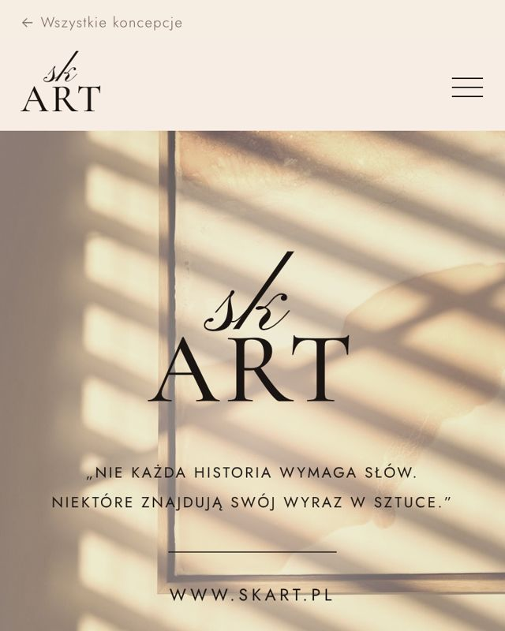
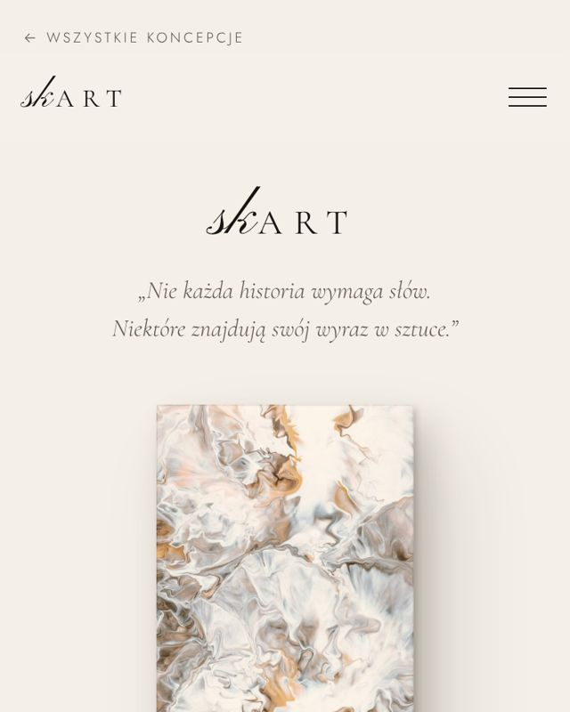
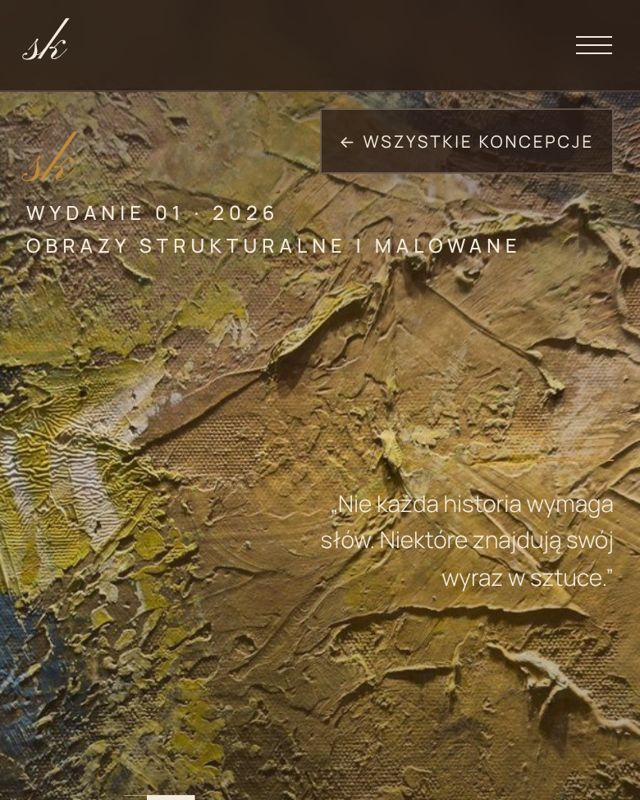
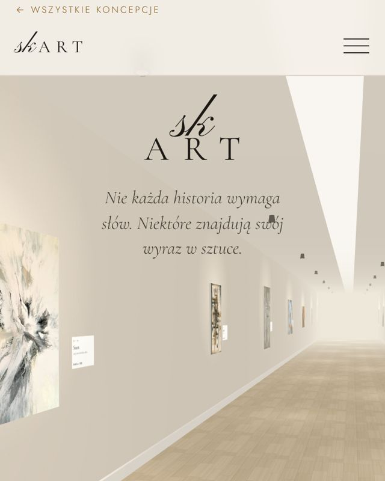
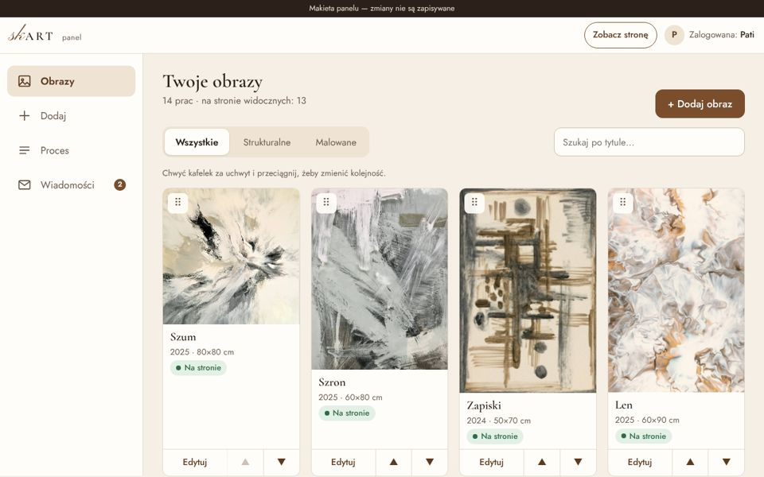

Pięć propozycji strony
Pati, wybierz kierunek.
Każda propozycja to klikalna strona: menu, galeria z powiększaniem, proces twórczy i formularz kontaktowy. Wszystkie mają tylko cztery zakładki, o które prosiłaś: O mnie, Galeria, Proces twórczy, Kontakt.
Nie musisz wybierać jednej w całości. Napisz po prostu, co Ci się podoba z której, a połączymy to w jedną stronę.

Najbliżej Twojego wzoru: beż, światło z okna, logo „sk ART” i trzy duże kafle.
Otwórz →
Jasna ściana galerii, jeden obraz na ekran i muzealna tabliczka obok każdego.
Otwórz →
Odważna, jak okładka pisma o sztuce: ogromne „skart” na fakturze farby.
Otwórz →Przesuń palcem po ekranie, a światło przesunie się po farbie i pokaże jej grubość.
Otwórz →
Przewijając, idziesz korytarzem wystawy, a Twoje obrazy wiszą na ścianach.
Otwórz →
Robisz zdjęcie telefonem, wpisujesz tytuł i wymiar, a obraz pojawia się na stronie. Możesz go też ukryć, oznaczyć jako sprzedany albo przestawić kolejność.
Panel będzie wyglądał tak samo, niezależnie od tego, którą koncepcję wybierzesz.
Zobacz panel →